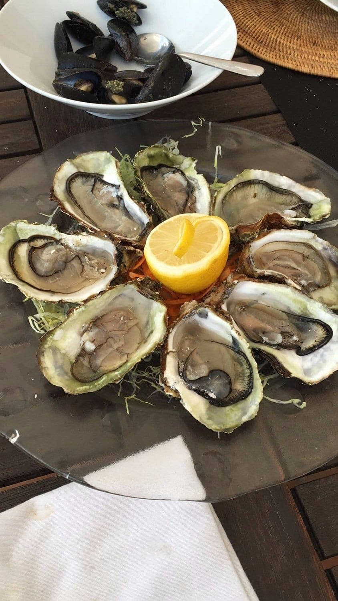
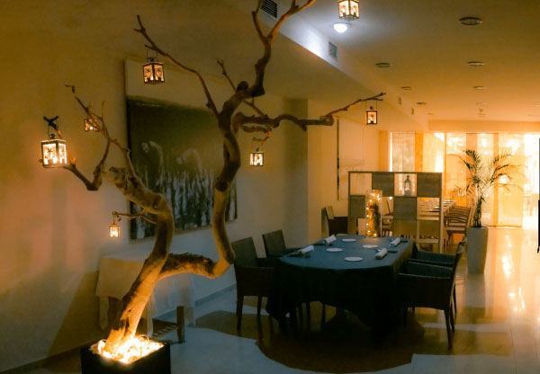
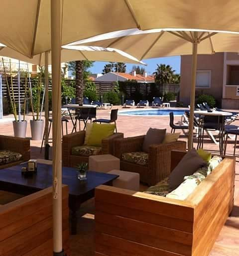
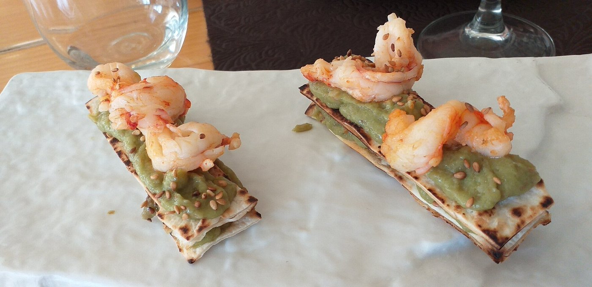
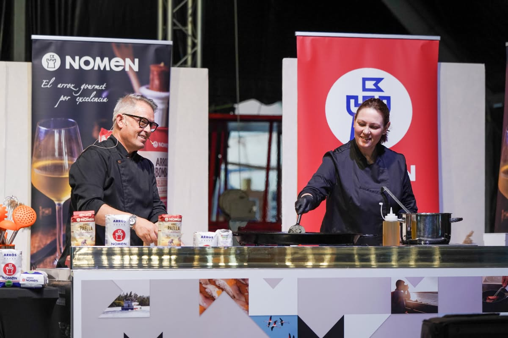
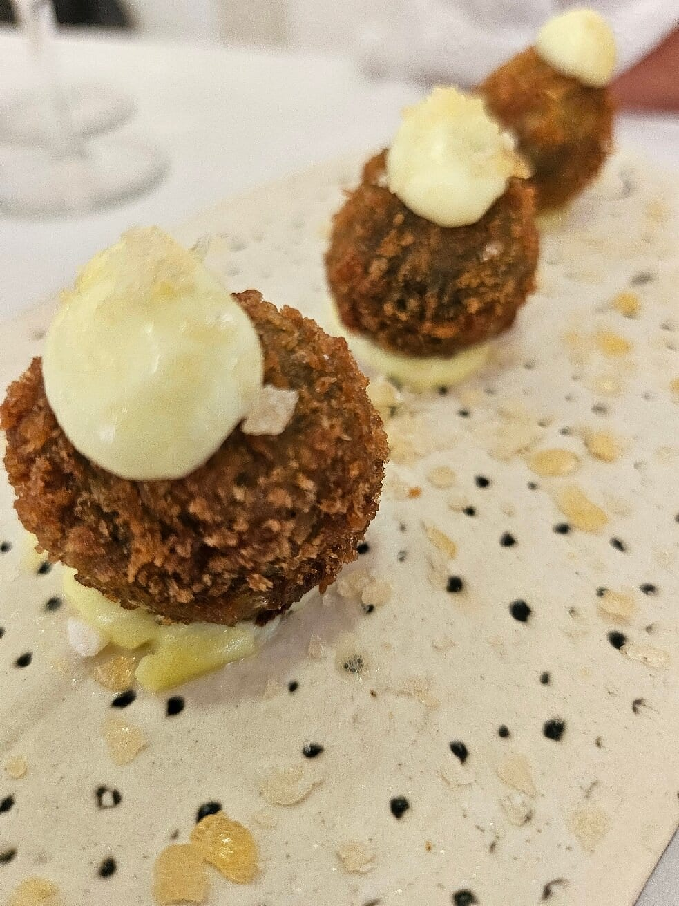
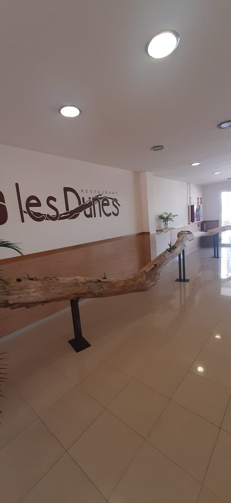

Once años de menú degustación frente al Mediterráneo
El camino de Sergi Piñol hasta los fogones no fue el habitual. Locutor de radio en la Cadena Ser hasta 1998, aceptó en el año 2000 hacerse cargo de un restaurante casi sin saber abrir una botella de vino, junto a quien entonces era su novia, Noemi Ribes. Una pausa familiar en 2010, tras el nacimiento de su hija Ruth, le dio la perspectiva que en 2015 tomaría forma definitiva: Les Dunes, un proyecto pensado para dar a conocer la cocina del Delta del Ebro desde otro ángulo, con toques modernos y un cuidado especial en cada presentación.
Once años después, Les Dunes se ha consolidado como una de las citas gastronómicas de referencia del Delta, con un menú degustación que evoluciona con las estaciones y un servicio que Sergi define sin rodeos: si algo no gusta, se cambia en el momento. Noemi Ribes, jefa de cocina desde el primer día, es quien traduce cada idea en plato con precisión y constancia.


De la radio a los fogones del Delta
Riumar es el último núcleo habitado antes de que el Ebro se abra al Mediterráneo, en el corazón de un Delta de arrozales, marismas y aves. Ahí, entre casas de veraneo y el rumor del río, Les Dunes lleva once años defendiendo una cocina que no reniega de su territorio: anguila ahumada, arroces de proximidad, pescado de marisma y ostras que llegan de las bateas cercanas conviven en un menú que cambia con las estaciones y que siempre termina en arroz.
La casa ha sumado además Les Dunes Sensacions, un segundo menú nacido de la idea de llevar la experiencia gastronómica un paso más allá: la sala a media luz, un candil sobre cada mesa y media hora de música elegida por el propio comensal. "Buscábamos la perfección en la mesa", resume Sergi Piñol. Un restaurante pequeño, familiar, que ha decidido no dejar nada al azar.

Un alcalde en la mesa de los Gourmets
Programa de la velada

Las personas detrás de Les Dunes

Sergi Piñol
Chef y director
De la radio a los fogones. Impulsor del menú degustación de Les Dunes desde 2015 y profesor de cocina en sus ratos libres.
Noemi Ribes
Jefa de cocina
El verdadero pulmón de la casa. Ejecuta cada plato creado por Sergi con precisión y un detalle que se nota en cada mesa.
"Tenía claro que algún día de mi vida quería hacer esto: crear un menú que fuera único y te dejara con una sensación inolvidable."


Ficha del restaurante
Durante la cena compartiremos algunos momentos en stories. La crónica completa llegará días después.
Leer crónica completa